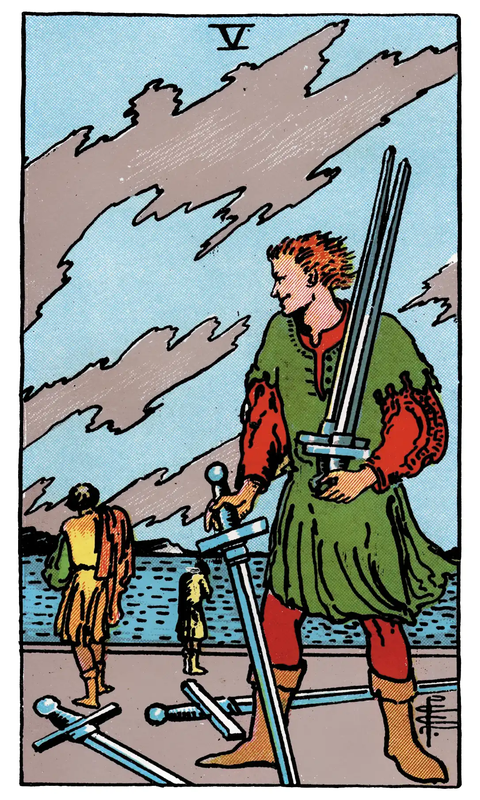

Five of Swords

A.E.W.
Upright
Degradation, destruction, revocation, infamy, dishonour, loss, with the variants and analogues of these.
Additionally
An attack on the fortune of the Querent.
Recurrence
2 - Vigils.
3 - Determination.
4 - Regularity.
Reversed
The same; burial and obsequies.
Additionally
A sign of sorrow and mourning.
Recurrence
2 - Reverse.
3 - Hesitation.
4 - Order.
S.L.M.M.
Upright
Mourning, Sadness, Affliction
Reversed
Losses Trouble (same signification, whether reversed or not.)
Description
A disdainful man looks after two retreating and dejected figures. Their swords lie upon the ground. He carries two others on his left shoulder, and a third sword is in his right hand, point to earth. He is the master in possession of the field.